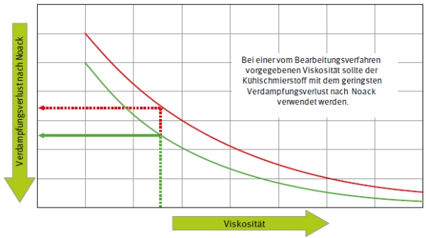
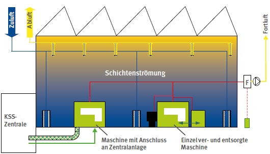

Für die Ermittlung und Beurteilungen der Gefährdungen bei Tätigkeiten mit Kühlschmierstoffen ist die TRGS 402 (Ausgabe 6/2008) heranzuziehen. Im Nachfolgenden wird auf die Besonderheiten bei Tätigkeiten mit diesen Stoffgemischen hinsichtlich der Befundsicherung gemäß Abschnitt 2.10 der TRGS 402 eingegangen. Die inhalative Belastung (Abschnitt 4.4 TRGS 402) ist vom Arbeitgeber hinsichtlich Ausmaß und Dauer zu ermitteln. Da Kühlschmierstoffe keinen verbindlichen AGW haben, kann die Beurteilung z. B. Anhand des Standes der Technik (vgl. Abschnitt 5.3 der TRGS 402 und Abschnitt 6.1.2 erfolgen.
Für alle Tätigkeiten mit Kühlschmierstoffen sind zunächst die Basismaßnahmen gemäß Abschnitt 6.3.3 umzusetzen. Abhängig von der Tätigkeit, den technischen Randbedingungen, wie z. B. der technischen Lüftung, kann die Ermittlung und Beurteilung der Gefährdungen gemäß TRGS 400 nach folgenden Stufen abgeschlossen werden:
Umsetzung der Basismaßnahmen ohne Wirksamkeitskontrolle
Erfüllt die Tätigkeit folgende Kriterien, so kann mit Umsetzung der Basismaßnahmen davon ausgegangen werden, dass der Befund "Schutzmaßnahmen ausreichend" auch ohne Wirksamkeitskontrolle lauten kann (vgl. Abschnitt 5.1 (2) TRGS 402):
Umsetzung der Basismaßnahmen mit Wirksamkeitskontrolle
Kann nach Umsetzung der Basismaßnahmen nicht abschließend davon ausgegangen werden, dass der Befund auch ohne Wirksamkeitskontrolle "Schutzmaßnahmen ausreichend" lauten kann (vgl. Abschnitt 5.1 (2) TRGS 402), so hat eine Wirksamkeitskontrolle zu erfolgen. Abweichend von den o. g. Verfahren können dies z. B. sein:
Hat die Wirksamkeitskontrolle den Befund „Schutzmaßnahmen nicht ausreichend“ ergeben, sind technische Schutzmaßnahmen erforderlich.
Bei zahlreichen Bearbeitungsverfahren kann davon ausgegangen werden, dass die alleinige Umsetzung der Basismaßnahmen nicht ausreicht, um den Befund „Schutzmaßnahmen ausreichend“ zu erhalten. Zu diesen Verfahren gehören z. B.:
Je nach den individuellen Randbedingungen kann die Durchführung technischer Maßnahmen in verschiedenen Stufen durchgeführt werden.
Umsetzung der Basismaßnahmen und einfache technische Schutzmaßnahmen.
Unter bestimmten Voraussetzungen kann es ausreichen, dass die Ausbreitung von Aerosolen z. B. durch Prallbleche oder Einhausungen verhindert werden kann. Weitere Randbedingungen die erfüllt sein müssen, wären in diesem Fall eine ausreichende natürliche Lüftung durch Fenster, Tore und Dachreiter. Folgende Kriterien können für diese Verfahren angewendet werden:
Nach Durchführung der Maßnahmen hat eine Wirksamkeitskontrolle zu erfolgen, hat diese den Befund „Schutzmaßnahmen nicht ausreichend“ ergeben, sind weitere Maßnahmen erforderlich.
Umsetzung der Basismaßnahmen und weiterführende technische Schutzmaßnahmen – Prozesslufttechnische Maßnahmen
Als weitere Maßnahmen eignen sich prozesslufttechnische Maßnahmen, die sich auf die Absaugung von Maschinen und Nebenaggregaten beziehen. Der Auslegung der Erfassung bzw. Absaugung ist dem jeweiligen Anwendungsfall anzupassen. Hinweise enthält die VDI 2262 Blatt 4 "Erfassung luftfremder Stoffe" sowie die VDI 3802 Blatt 2 (Entwurf). Die abgesaugte Luft ist in jedem Fall als Fortluft (und Berücksichtigung der BImSchV) nach außen abzuführen.
Wird eine Luftrückführung aufgrund der Randbedingung (z. B. Verfahren mit mäßiger Emission) in Erwägung gezogen, so sind die Bedingungen der VDI 2262 Blatt 3 in vollem Umfang anzuwenden.
Nach Durchführung der prozesslufttechnischen Maßnahmen hat eine Wirksamkeitskontrolle zu erfolgen, hat diese den Befund "Schutzmaßnahmen nicht ausreichend" ergeben, sind in der Regel zusätzlich hallenlufttechnische Maßnahmen erforderlich.
Umsetzung der Basismaßnahmen und weiterführende technische Schutzmaßnahmen – Hallenlufttechnische Maßnahmen
Die hallenlufttechnischen Maßnahmen sind gemäß VDI 3802 Blatt 1 „Lüftungstechnische Maßnahmen in Industriebetrieben“ auszulegen. Wegen der Komplexität dieser Maßnahmen sollte die Planung der gesamten Lüftungstechnik (Hallenlüftung und Prozesslüftung) von einem qualifizierten Ingenieurbüro (z. B. das Ingenieurbüro kann durch das Vorlegen von Referenzen belegen, dass es derartige Maßnahmen bereits erfolgreich umgesetzt hat) durchgeführt werden.
Die Luftführung als Umluft hat sich der Einsatz von Kühlschmierstoffen als nicht sinnvoll herausgestellt, die Nutzung von regenerativen Wärmetauschern speziell vom Typ Wärmeräder ist ebenfalls zu vermeiden.
Folgende Randparameter haben sich als günstig erwiesen:
Abschließend hat eine Wirksamkeitskontrolle zu erfolgen.
Umsetzung der Basismaßnahmen und technische Schutzmaßnahmen nach dem Modell „Best Practice“ gemäß Anhang 9.3 dieser TRGS
Konnte mit den bisher beschriebenen Schutzmaßnahmen das Schutzziel nicht erreicht werden, so sind als technische Maßnahmen in vollem Umfang die im Anhang 4 dieser TRGS genannten Maßnahmen nach dem "Best Practice Modell" durchzuführen.
Sind sämtliche Maßnahmen nach dem "Best Practice Modell" durchgeführt, kann davon
ausgegangen werden, dass der Stand der Technik eingehalten ist und der Befund lautet
"Schutzmaßnahmen ausreichend".
Anhang 9.3 Ideale lufttechnische Maßnahmen (Best Practice) für technische Schutzmaßnahmen
beim Einsatz von Kühlschmierstoffen
Bei der Umsetzung des „Best Practice“ Modells sind folgende Punkte zu berücksichtigen:
Der Kühlschmierstoff ist entsprechend des folgenden Diagramms auszuwählen, wobei vorher zu prüfen ist, ob die Substitution technisch möglich ist.

Die Basismaßnahmen (s. Anhang 8) werden voll umfänglich in allen Arbeitsbereichen der Halle umgesetzt.
Die Maschinen sind vollständig eingehaust. Weitere Quellen von KSS-Emissionen wie z. B. mit Kühlschmierstoff benetzte, abdunstende Werkstücke im Arbeitsbereich, Spänebehälter, Transportbänder, Kühlschmierstoffrinnen etc. sind einzuhausen, abzudecken oder aus dem Hallenbereich zu entfernen.
Die Erfassung und Absaugung umfasst alle Maschinen, Fertigungsanlagen und peripheren Einrichtungen (VDI 3035 "Gestaltung von Werkzeugmaschinen, Fertigungsanlagen und peripheren Einrichtungen für den Einsatz von Kühlschmierstoffen") und ist entsprechend dem Stand der Technik ausgelegt (VDI 2262 Blatt 4 "Erfassen luftfremder Stoffe" und VDI 3802 Blatt 2 "Lüftungstechnische Maßnahmen bei Tätigkeiten mit Kühlschmierstoffen" (Entwurf). Die erfasste Luft wird Abscheidern zugeführt und die Luft nach den Abscheidern wird unter Berücksichtigung der BImSchV. nach außen abgeführt. Die Systeme zur Erfassung, Absaugung und Abscheidung unterliegen einer regelmäßigen Prüfung und Wartung entsprechend der Vorgaben der Regel "Arbeitsplatzlüftung – Lufttechnische Maßnahmen" (BGR 121).
In der Werkhalle ist eine Hallenlüftung vorhanden deren Zu- und Abluftvolumenströme nach den auftretenden Lasten durch ein qualifiziertes Ingenieurbüro (z. B. das Ingenieurbüro kann durch das Vorlegen von Referenzen belegen, dass es derartige Maßnahmen bereits erfolgreich umgesetzt hat) (siehe VDI 3802 "Lüftung in Industriehallen") ausgelegt wurden. Die Luftführung ist als Schicht- bzw. Quelllüftung konzipiert und ausgeführt, hierdurch werden die Lasten am effektivsten aus dem Atembereich der Beschäftigten abtransportiert. Die Hallenlüftung wird regelmäßig überprüft und gewartet (BGR 121) und die maßgeblichen Kenngrößen werden mit den bei der Abnahme in Anlehnung an die DIN EN 12599 "Lüftung von Gebäuden - Prüf- und Messverfahren für die Übergabe eingebauter raumlufttechnischer Anlagen" festgestellten Einstellungen verglichen und evtl. korrigiert. Nachfolgend ist einer Werkhalle mit installierter "Best Practice" dargestellt:

Abb. 1 Ideale lufttechnische Maßnahmen bei Tätigkeiten mit Kühlschmierstoffen